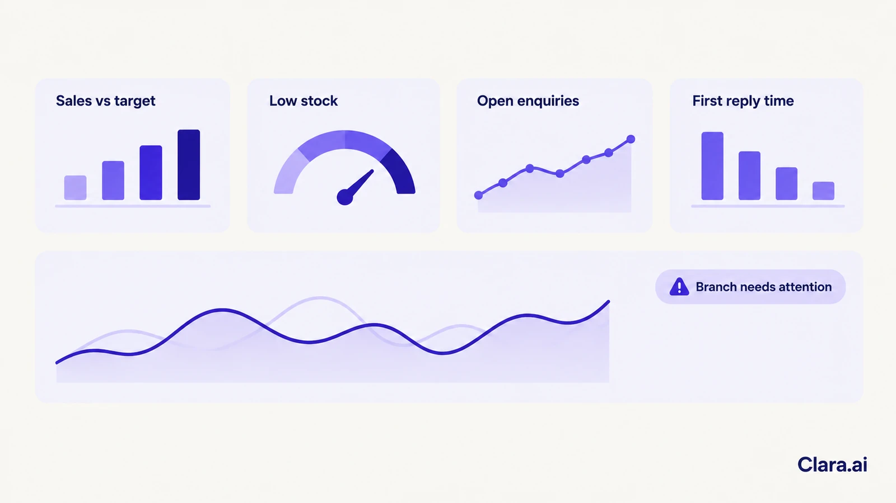
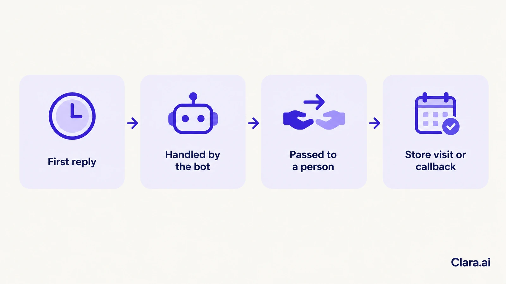

An operations intelligence dashboard for multi-branch retail brings sales, stock, customer enquiries and response times from every branch into one live view. It shows managers which branches are slipping and why, so they act the same day. People still make the decisions; the dashboard shows where to look.
It is Monday, 9 am, in Riyadh. A regional manager opens three spreadsheets, a sales report from head office and a WhatsApp group full of branch updates. One branch missed its weekend target. Another has a bestseller out of stock. Nobody knows which problem started first. By the time she finds out, the week has begun.
Every branch keeps its own records. Sales sit in the point-of-sale system. Stock sits in another tool. Customer enquiries arrive by phone, WhatsApp and the website, and few of them are counted. Reports are built by hand, often once a week.
That creates three gaps.
It shows the numbers a manager needs, for every branch, in one place. A typical view covers:

A good dashboard also explains. If one branch's conversions fall, it shows whether enquiries dropped, replies slowed or stock ran out. The manager sees the cause, not just the dip.
It uses the systems you already run: point-of-sale, inventory, your CRM and your spreadsheets. It also uses the conversations handled by your AI web chatbot, your WhatsApp chatbot for business and your AI calling agent.
In the Gulf, many enquiries start on WhatsApp and the website together. A dashboard that ignores chat misses the front of the sales funnel.
Clara.ai starts by checking which sources can be trusted. Where two systems disagree on a figure, we agree which one is the reference before any chart is built on it.
Every chat leaves a record: when it arrived, how fast it was answered, what the customer wanted and whether a person took over.
KISNA Diamond & Gold, a jewellery retailer, runs a WhatsApp AI chatbot called KIA, built by Clara.ai. KISNA has the chatbot, not a dashboard, so these are chatbot results, not dashboard results. They show the kind of signal a dashboard can track.

| Measure | Result |
|---|---|
| First reply to a customer | From 4-6 hours to 4-6 seconds |
| Chats ending in a store-visit or callback request | Around 24% |
| Chats handled fully by the bot | 89 of every 100 |
| Chats passed to a person | 11 of every 100 |
| Manual CRM entry | 60+ hours a week saved |
Source: KISNA Diamond & Gold, WhatsApp chatbot KIA, built by Clara.ai.
Put the same measures on a branch-by-branch view and a manager can see which stores receive visit requests and how quickly each branch follows up.
People make every decision. The dashboard flags a branch with slow replies or low stock, and the manager chooses what to do. Alerts go to a named person, not a general inbox.
Access follows the role. Branch staff see their own branch. Head office sees all of them. For retailers in Saudi Arabia, the PDPL (Personal Data Protection Law) governs customer details, so we limit who can see them and review that setting with you.
The dashboard shows patterns in operations. It is not built to rank individual staff.
Clara.ai builds, deploys and manages AI chatbots, AI calling agents and operations dashboards, and works with 19 active enterprise clients across 12 industries, in India and the Gulf.